01
本州最南端の太陽
串本町は年間を通じて温暖。燦々と降り注ぐ太陽のもとで育ったポンカンは糖度12度以上。深い甘みとスッキリした後味を生みだします。
四季彩園
SHIKISAIEN
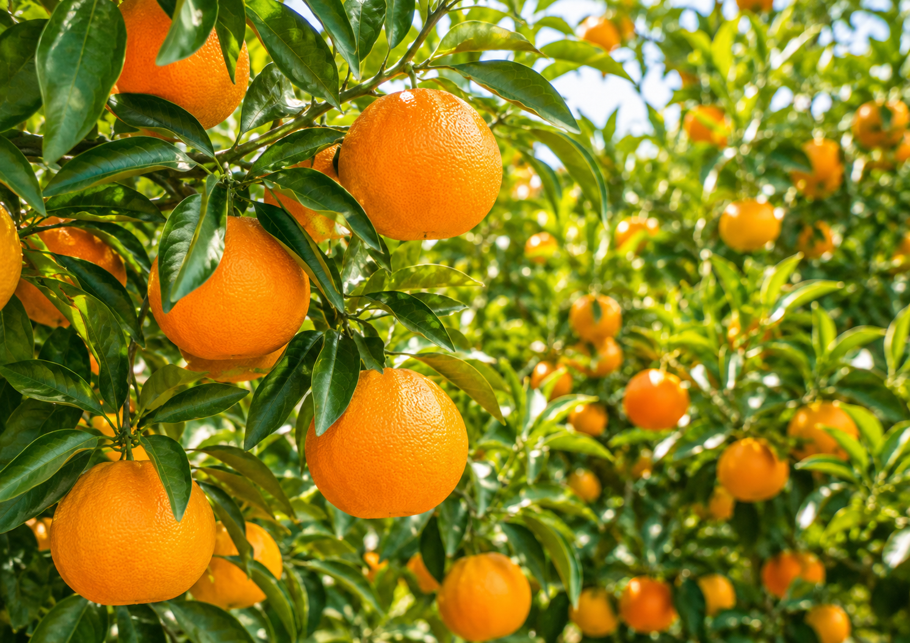
本州最南端の串本町。燦々と降り注ぐ太陽と黒潮が育む温暖な気候のなか、四季彩園は代々ポンカン栽培を続けています。
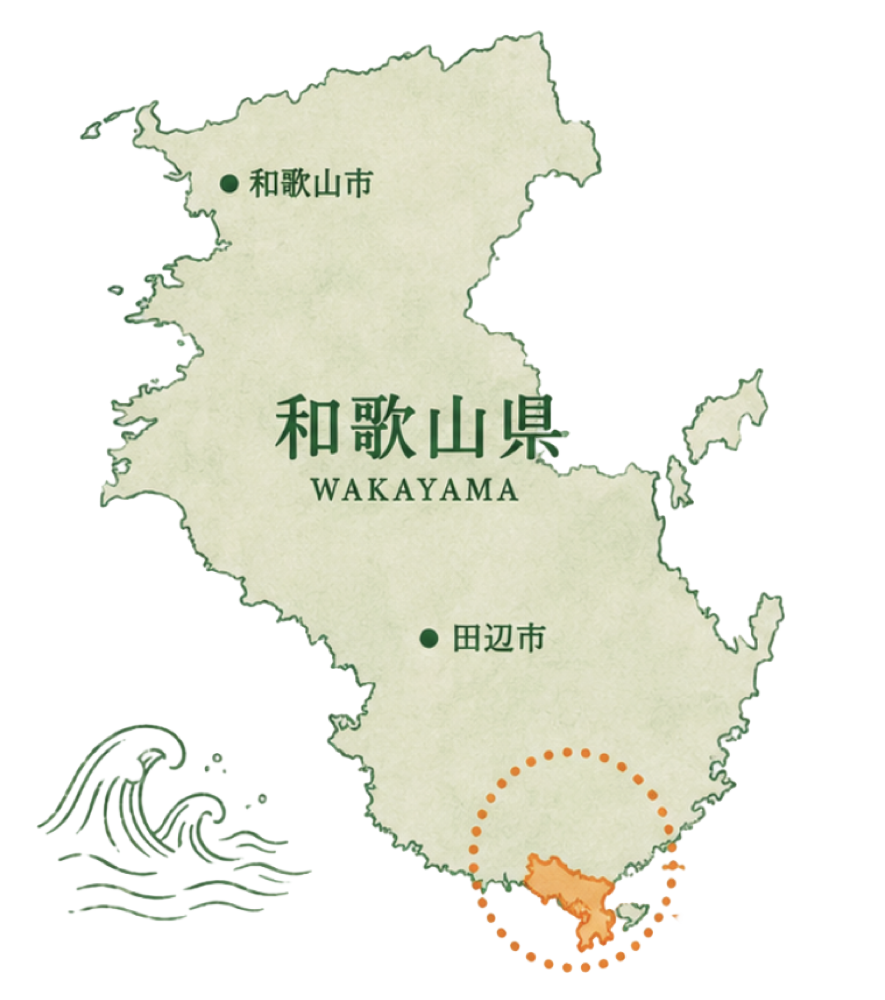
串本町姫約50a（5,000㎡）の農園で、量より質を大切に。一つひとつ手をかけて育てています。
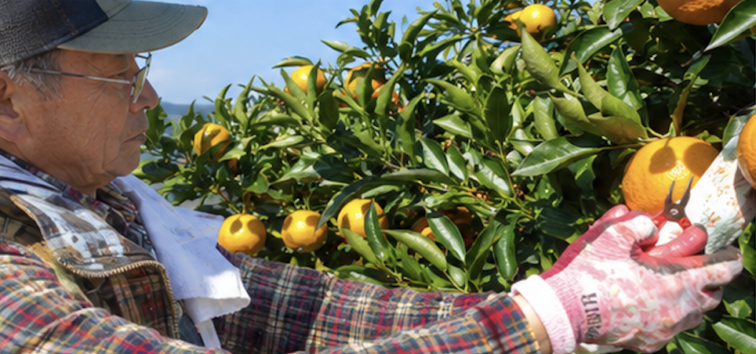
「おいしい」には終わりがありません。収穫のたびに自分たちで食べて味を確かめ、毎年少しずつ理想に近づいていく。それが四季彩園の農業です。
家族が食べるものと同じものをお届けしたい。だから農薬も化学肥料も使わない。安心して食べてもらえることが、一番のこだわりです。
串本の豊かな自然と風土が、私たちのポンカンを生み出しています。大好きなこのまちのことを、ポンカンを通じて知ってもらえること、それが私たちの願いです。
甘いだけではない、絶妙な糖酸バランス。雑味がなく、スッキリとした後味——それが四季彩園のポンカンです。土づくりから収穫まで、おいしいと向き合い続けることがわたしたちの農園の姿勢です。
串本町は年間を通じて温暖。燦々と降り注ぐ太陽のもとで育ったポンカンは糖度12度以上。深い甘みとスッキリした後味を生みだします。
糖度12度以上でありながら、甘さと酸味が絶妙にバランス。雑味がなくスッキリとした後味で、ついついたくさん食べてしまうと好評です。
選果機は使わず、ひとつひとつ手に持って見て、触れて、重さを感じながら選別。予措（追熟）をせず収穫後すぐ出荷するため、フレッシュでジューシーなポンカン本来のおいしさが届きます。
有機率100％の有機肥料・自作有機堆肥を使用。イセエビガラ、卵ガラ、ヌカ、モミガラなど約10種類の素材から作る堆肥で、土の力からおいしさを育てています。
収穫のたびに自分たちで食べて味を確かめる。
おいしいを守るために、妥協しない。
それが四季彩園のポンカンづくりです。
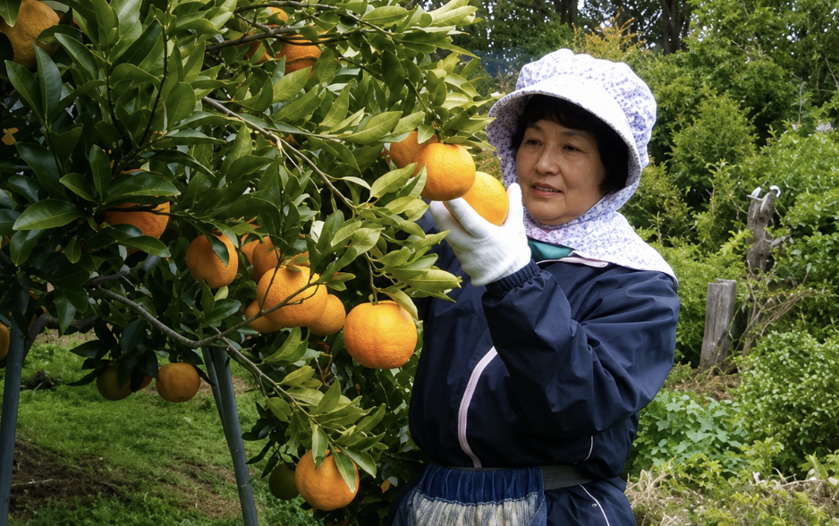
四季彩園のポンカンは、さまざまな形でお楽しみいただけます。
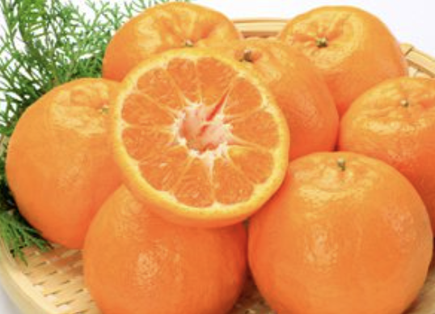
厳選した完熟ポンカンをそのまま。フレッシュでジューシーな食感をお楽しみください。
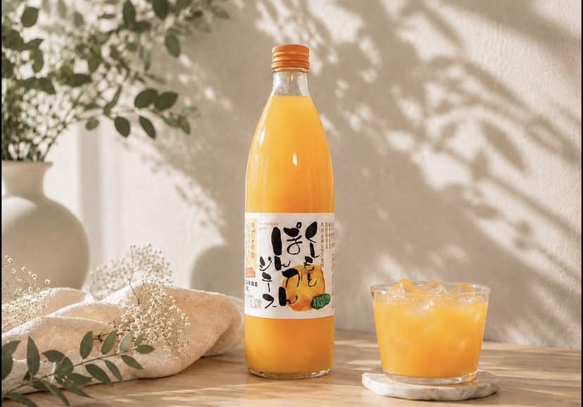
収穫後すぐに搾った100%ストレートジュース。無添加でポンカンそのままの味わいです。
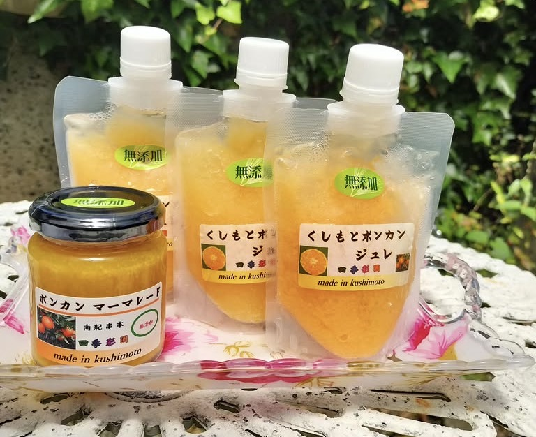
ポンカンの風味をそのままに閉じ込めた、なめらかなジュレ。贈り物にも喜ばれています。
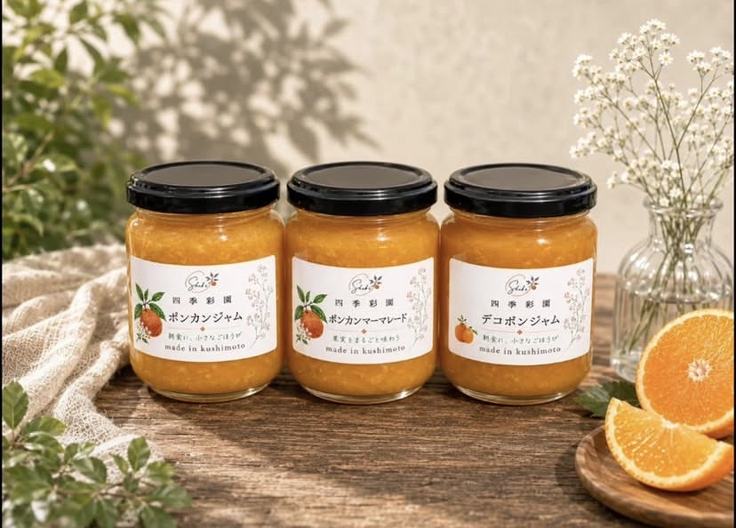
皮も果肉も丸ごと使った、香り豊かなジャム。トーストやヨーグルトに。
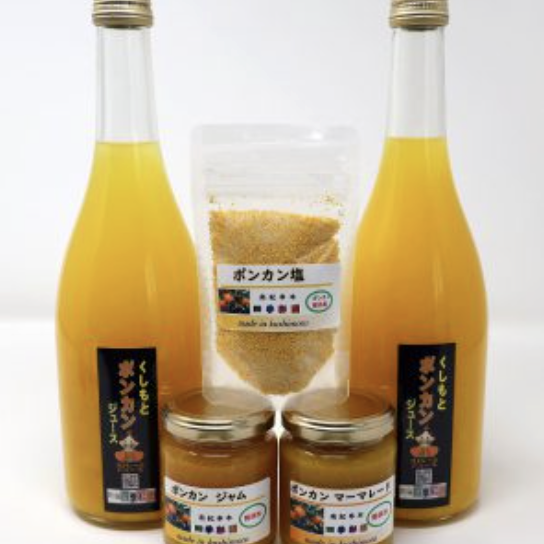
大切な方への贈り物に。季節の詰め合わせセットをご用意しています。
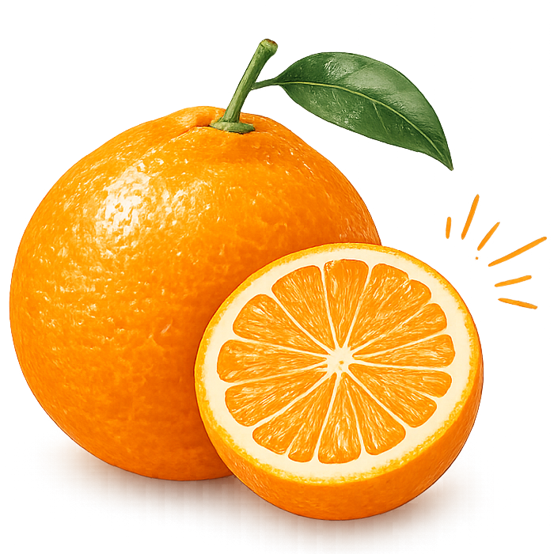
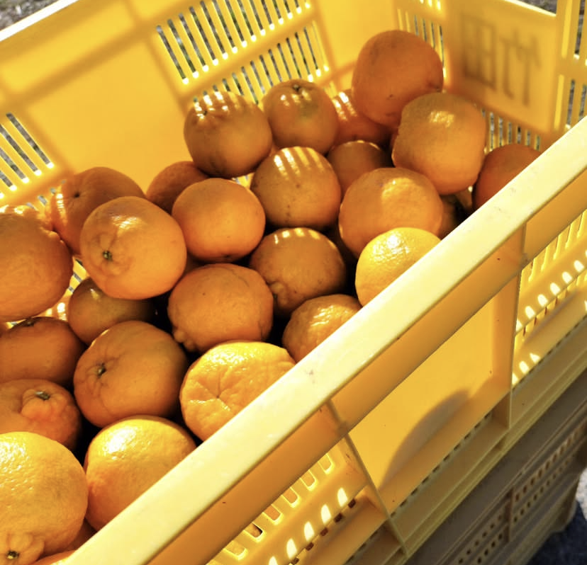
串本の豊かな自然と風土が、私たちのポンカンを生み出しています。大好きなこのまちのことを、ポンカンを通じて知ってもらえること、それが私たちの願いです。
本州最南端に位置する串本町。黒潮うねる太平洋に面し、豊かな自然と深い歴史が息づく、魅力あふれる土地です。

黒潮の影響で年間を通じて温暖。豊かな気候が、この土地の自然をはぐくんでいます。

太平洋に突き出た日本列島の端。一年を通じて日差しが豊かで、南国のような恵まれた自然が広がります。
串本には、美しい自然や歴史的なスポットなど、魅力的な場所がたくさんあります。四季彩園のポンカンとともに、ぜひ訪れてみてください。
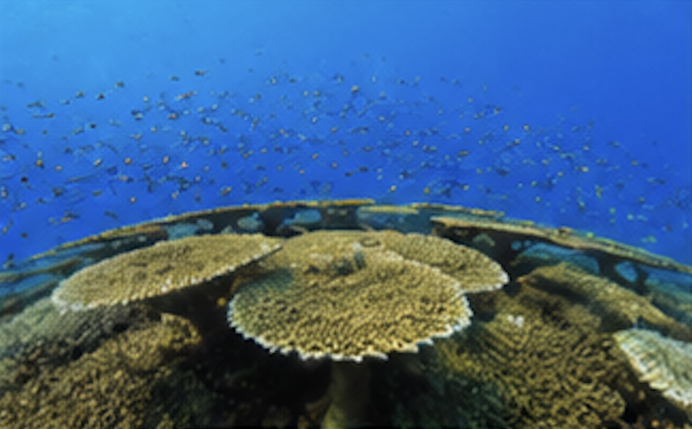
串本海中公園は日本最大のテーブルサンゴが広がる国内有数のダイビングスポット。透き通った海の美しさは格別です。
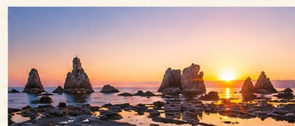
海の中に大小40余りの岩柱が並ぶ奇景。国の天然記念物で、朝日に照らされる幻想的な景色は串本を代表する絶景です。
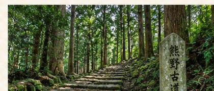
串本は熊野古道の終着エリア。古来より多くの人々が歩いた霊験あらたかな道で、豊かな自然と歴史を感じることができます。
串本町は、海の幸も山の幸も豊富。新鮮な魚介類や郷土料理など、地元ならではの味覚を楽しむことができます。
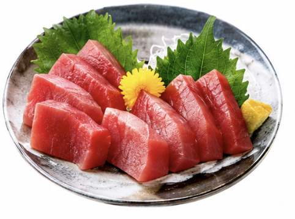
串本といえば新鮮なまぐろ
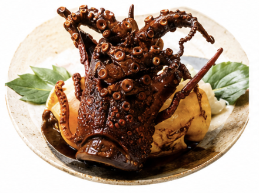
ぷりぷりの食感と濃厚な旨み
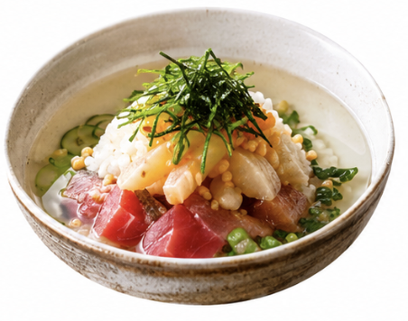
さっぱり美味しい郷土の味
※画像はイメージです
収穫ボランティアとして四季彩園に訪れた方のストーリーです。
旅の道のりから、串本のごはん、農園の風景、農作業の様子まで、串本と四季彩園の魅力がぎゅっと詰まっています。
旅気分で、是非のぞいてみてください。
もっと串本を知りたい方は
南紀串本観光ガイド →JR新宮駅から特急で約40分（くろしお利用）
大阪方面から車で約3時間30分（阪和自動車道経由）
南紀白浜空港から車で約1時間40分
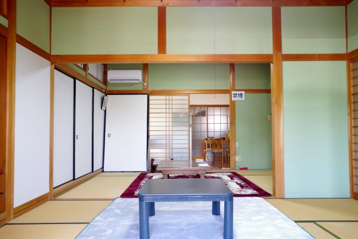
農園のすぐそば、串本でゆったりとした時間を。
JR紀伊姫駅徒歩1分 ／ 一棟貸し2〜6名